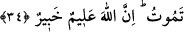

Allah Teâlâ’dan son nefesimizi amellerin en fazîletlisi olan tevhid üzere ve yüce arşın
Rabbini zikrederken tamamlamasını, bizi altlarından ırmaklar akan cennetlere
yerleştirmesini, gece gündüz nurlu cemâlini görmekle şereflendirmesini niyaz ederiz.
Nebiyy-i Emîn hürmetine âmîn!
34. Kıyâmet vakti hakkındaki bilgi, ancak Allâh’ın katındadır. Yağmuru O
yağdırır, rahimlerde olanı O bilir. Hiç kimse yarın ne kazanacağını bilemez. Yine
hiç kimse nerede öleceğini bilemez. Şüphesiz Allah, her şeyi bilendir, her şeyden
haberdardır.
“Kıyâmet vakti hakkındaki bilgi, ancak Allâh’ın katındadır.”
“Saat,” iki yeninin/gece ile gündüzün parçalarından bir parçadır. Kıyâmete “saat”
denilmesi, dünyâ saatlerinin en son saatinde kopacağından dolayıdır. Yâni kıyâmetin
kopma vakti hakkındaki bilgi, ardından meydana gelecek haller ve korkularla alâkalı
mâlûmât Allâh’ın katındadır. Bunu sadece O bilmektedir. Bu sebeple hiçbir insan
kıyâmetin hangi yılda, hangi ayda, gece ve gündüzün hangi saatinde kopacağını bilemez.
Rivâyete göre çöl halkından Hâris b. Amr, Peygamberimiz (s.a.)’e gelip kıyâmeti ve
onun ne zaman kopacağını sordu ve: “Arâzilerimiz kurudu. Tarlaları ektim, fakat yağmur
ne zaman yağacak? Hanımımı geride hamile bıraktım. Aceba erkek mi doğuracak kız
mı? Ben dün ne yaptığımı biliyorum, fakat acaba yarın ne yapacağım? Nerede
doğduğumu biliyorum, fakat aceba nerede öleceğim?” dedi. Bunun üzerine bu âyet nâzil
oldu.[105]
Yâni bu beş ilim/bilgi yüce Yaratıcı’nın hazinesindedir. Çalışıp çabalayarak onlara
muttali olmanın anahtarı hiçbir insana verilmemiştir.
Allah Teâlâ kıyâmet vaktini, ancak insanlar dikkat ve hazırlık içinde bulunsunlar diye
gizli tutmuştur. Nitekim rivâyete göre bir bedevî Nebî (s.a.)’e: “Kıyâmet vakti ne
zaman?” diye sordu. Rasûlullah (s.a.): “Kıyâmet için ne hazırladın?” buyurdu. Bedevî:
“Hiçbir şey. Ancak ben Allâh’ı ve Rasûlü’nü seviyorum.” dedi. Bunun üzerine
Peygamberimiz (s.a.): “Sen sevdiklerinle birlikte olacaksın!” buyurdu.[106]
Benim Arap, Medineli, Kureyşli bir habîbim var.
Onun gam ve derdi benim sevda ve huzurumun temelidir.
O güneş gibi ufuklarda görününce,